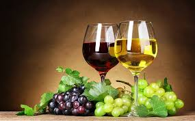

კახეთი — ადგილწარმოშობის დასახელების თეთრი მშრალი ღვინო. იგი მზადდება რქაწითელის და კახური მწვანეს ჯიშის ყურძნისაგან, დურდოს სრული დადუღებით. ღვინო „კახეთი“ ხასიათდება ქარვისფერი შეფერვით, ხილის არომატით, სასიამოვნო სიმწკლატით, ხავერდოვნებით და ჰარმონიულობით. ღვინო „კახეთის“ მოცულობითი სპირტშემცველობა უნდა შეადგენდეს 10,5-13,5%-ს, შაქრების მასური კონცენტრაცია — არაუმეტეს 4 გ/დმ³, ტიტრული მჟავიანობა — 5-6 გ/დმ³, აქროლადი მჟავიანობა — არაუმეტეს 1,2 გ/დმ³, დაყვანილი ექსტრაქტის მასის კონცენტრაცია — არა ნაკლებ 18 გ/დმ³. მევენახეობის სპეციფიკური ზონა „კახეთი“ მდებარეობს საქართველოს სამხრეთ-აღმოსავლეთ ნაწილში მდინარეების ალაზნისა და იორის აუზში და უკავია 11,300 კმ² ფართობი, ჩრდილო განედის 410-42015' და აღმოსავლეთ გრძნედის 450-46030'კოორდინატებზე.
